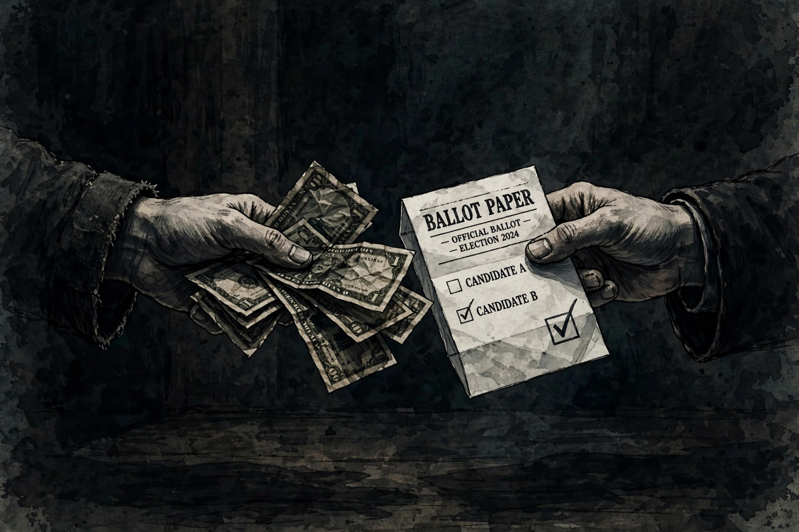

Vote buying

Vote buying is an economic exchange in which a political actor — a candidate, party or broker — offers money, goods or services to a voter in exchange for their vote, or for abstaining from voting. It is a form of electoral corruption prohibited in most democracies, and is closely related to clientelism, in which patrons distribute material benefits to clients in return for political support.
Forms
Payments may be cash, food parcels, building materials, jobs, or payment of utility bills. "Negative vote buying" pays supporters of an opponent to stay home. Because the ballot is secret, buyers rely on brokers embedded in communities, on voters photographing their marked ballot, or on collective rewards to neighbourhoods that deliver a bloc vote.
Prevalence and effects
Survey-based studies report vote-buying offers affecting substantial minorities of voters in parts of Latin America, Africa, Southeast Asia and southern Europe. Research suggests offers are most common where poverty is high, elections are close, and state capacity to enforce bans is weak. Its effect on actual vote choice is debated: many voters accept goods and vote as they please, yet campaigns continue the practice because even small shifts can decide close races.
Countermeasures
Countermeasures include bans on mobile phones in voting booths, enforcement by electoral commissions, voter education campaigns, and the secrecy protections of the Australian ballot.
See also: Ballot stuffing, Corruption, Election monitoring.